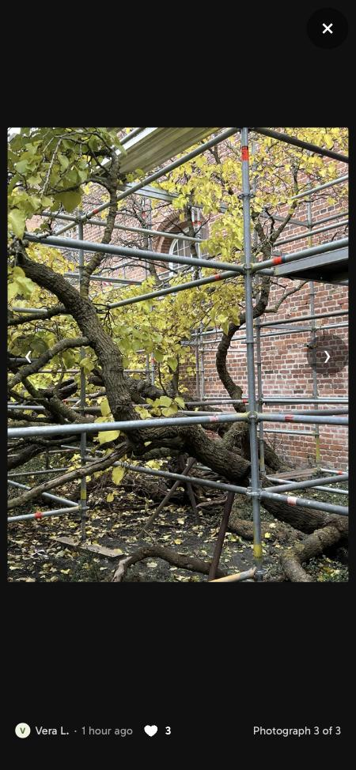
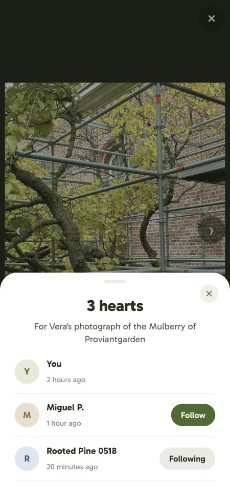
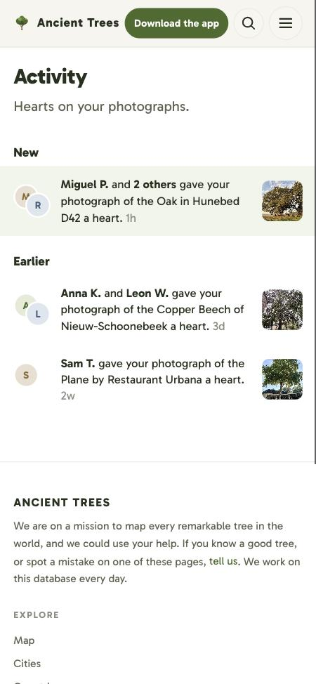
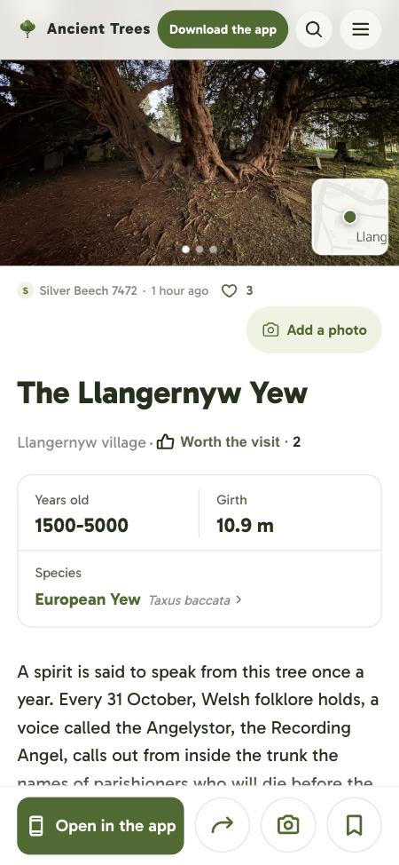

Wie gaf het hartje: in het echte product
Elke schermafdruk hieronder is de echte app (de huidige build in de simulator) of de echte website (live). Wat nieuw is, ligt eroverheen: alleen het getal naast het hartje, de lijst, de bel en de Activity-lijst. Gele stippellijn = waar je tikt.
iPhone

De foto van een bezoeker, geopend: naam, tijd, hartje. Nog zonder getal.
Het hartje geeft of neemt terug (gevuld = jij gaf er een). Het getal is een eigen tikvlak.
3 hearts
For Vera's photograph of the Mulberry of Proviantgarden
De BrandSheet van de app, zoals de website zijn eigen sheet heeft. Naam tikken = profiel.

Strava, Instagram en komoot zetten hun meldingen rechtsboven op het eerste scherm met nieuws van anderen. Bij ons is dat Discover, waar "New from visitors" staat. Het stipje alleen als er iets nieuws is.

Zweeft boven de kaart; voelt daardoor los, zoals je zei.
Miguel P. and 2 others gave your photograph of the Oak in Hunebed D42 a heart. 1h

Anna K. and Leon W. gave your photograph of the Copper Beech of Nieuw-Schoonebeek a heart. 3d

Sam T. gave your photograph of the Plane by Restaurant Urbana a heart. 2w

Nieuw scherm, met de kop van "New from visitors" (terugknop, titel in het midden). Tik op een regel = die foto geopend.

Op de tegels komt het getal achter het hartje ("♡ 3") zodra er hartjes zijn, zoals nu al; tik op het getal opent dezelfde lijst.
Website (telefoon, 375 breed)

De echte fotoweergave van de site, met het hartje gevuld en het getal ernaast.

De echte sheet van de site (Sheet.astro), met de lijst erin.

Een eigen pagina, te vinden in het menu achter je gezicht, met hetzelfde stipje op je gezicht als er iets nieuws is.
Duim en hartje uit elkaar houden
De duim gaat over de boom (was hij de wandeling waard), het hartje over de foto (een bedankje aan wie hem maakte). Wie dit goed doet, zet bij de stem over de plek een woord: Google Maps schrijft "Helpful" naast zijn duim, komoot schrijft bij een Highlight "Recommended by" met het aantal. Het hartje heeft nergens een woord nodig: dat kent iedereen van Instagram. Voorstel: achter de duim komen de woorden "Worth the visit · 2", zonder achtergrond, het hartje blijft kaal met zijn getal, op de regel van de fotograaf.

Onder de foto: wie, wanneer, ♡ 3 (de foto). Onder de naam: "Worth the visit · 2" (de boom). In de app op dezelfde plek dezelfde woorden.